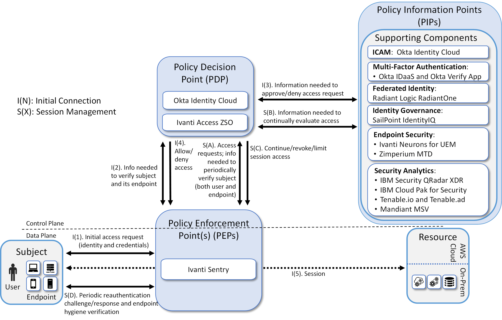
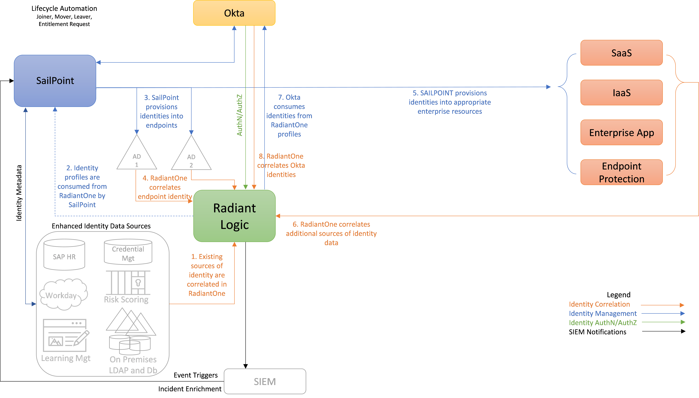
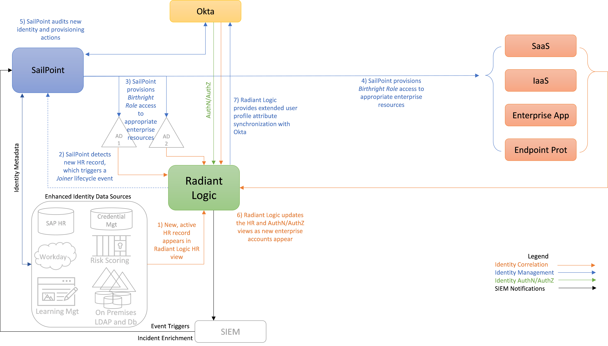
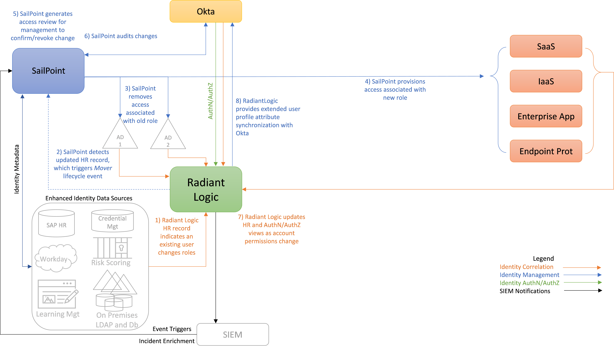
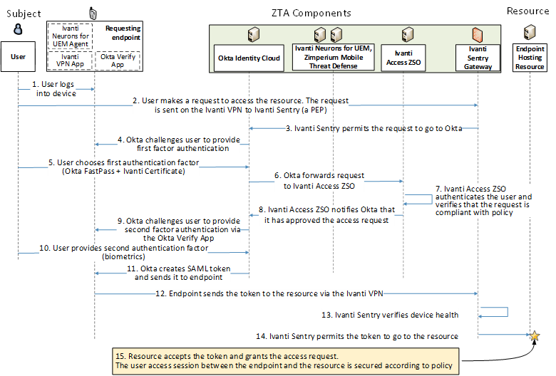

Enterprise 1 Build 1 (E1B1) - EIG Crawl - Okta Identity Cloud and Ivanti Access ZSO as PEs#
Note
This page is supplementary material for the NIST SP 1800-35 publication.
Technologies#
E1B1 uses products from Amazon Web Services, IBM, Ivanti, Mandiant, Okta, Radiant Logic, SailPoint, Tenable, and Zimperium. Certificates from DigiCert are also used. For more information on these collaborators and the products and technologies that they contributed to this project overall, see Collaborators and Their Contributions.
E1B1 components consist of Okta Identity Cloud, Ivanti Access ZSO, Ivanti Sentry, Radiant Logic RadiantOne Intelligent Identity Data Platform, SailPoint IdentityIQ, Okta Verify App, Ivanti Neurons for UEM, Zimperium MTD, IBM Security QRadar XDR, Tenable.io, Tenable.ad, IBM Cloud Pak for Security, Mandiant Security Validation (MSV), Ivanti Tunnel, DigiCert CertCentral, and AWS IaaS.
Table 1 lists all of the technologies used in E1B1. It lists the products used to instantiate each ZTA component and the security function that each component provides.
Table 1 - E1B1 Products and Technologies
Component |
Product |
Function |
|---|---|---|
PE |
Okta Identity Cloud and Ivanti Access ZSO |
Decides whether to grant, deny, or revoke access to a resource based on enterprise policy, information from supporting components, and a trust algorithm. |
PA |
Okta Identity Cloud and Ivanti Access ZSO |
Executes the PE’s policy decision by sending commands to a PEP that establishes and shuts down the communication path between subject and resource. |
PEP |
Ivanti Sentry |
Guards the trust zone that hosts one or more enterprise resources; establishes, monitors, and terminates the connection between subject and resource as directed by the PA; forwards requests to and receives commands from the PA. |
ICAM - Identity Management |
Okta Identity Cloud |
Creates and manages enterprise user and device accounts, identity records, role information, and access attributes that form the basis of access decisions within an organization to ensure the correct subjects have the appropriate access to the correct resources at the appropriate time. |
ICAM - Access & Credential Management |
Okta Identity Cloud |
Manages access to resources by performing user and device authentication (e.g., SSO and MFA) and using identity, role, and access attributes to determine which access requests are authorized. |
ICAM - Federated Identity |
Radiant Logic RadiantOne Intelligent Identity Data Platform |
Aggregates and correlates all attributes relating to an identity or object that is being authorized by a ZTA. It enables users of one domain to securely access data or systems of another domain seamlessly, and without the need for completely redundant user administration. Federated identity encompasses the traditional ICAM data, supports identities that may be part of a larger federated ICAM community, and may include non-enterprise employees. |
ICAM - Identity Governance |
SailPoint IdentityIQ |
Provides policy-based, centralized, automated processes to manage user identity and access control functions (e.g., ensuring segregation of duties, role management, logging, access reviews, analytics, reporting) to ensure compliance with requirements and regulations. |
ICAM - MFA |
Okta Verify app |
Supports MFA of a user identity by requiring the user to provide not only something they know (e.g., a password), but also something they have (e.g., a token). |
Endpoint Security - UEM/MDM |
Ivanti Neurons for Unified Endpoint Management (UEM) Platform |
Manages and secures enterprise desktop computers, laptops, and/or mobile devices in accordance with enterprise policy to protect applications and data; ensure device compliance; mitigate and remediate vulnerabilities and threats; monitor for suspicious activity to prevent and detect intrusions; prevent, detect, and disable malware and other malicious or unauthorized traffic; repair infected files when possible; provide alerts and recommend remediation actions; and encrypt data. Pushes enterprise applications and updates to devices, enables users to download enterprise applications that they are authorized to access, remotely deletes all applications and data from devices if needed, tracks user activity on devices, and detects and addresses security issues on the device. |
Endpoint Security - EPP |
Zimperium MTD |
Detects and stops threats to endpoints through an integrated suite of endpoint protection technologies including antivirus, data encryption, intrusion prevention, EDR, and DLP. May include mechanisms that are designed to protect applications and data; ensure device compliance with policies regarding hardware, firmware, software, and configuration; monitor endpoints for vulnerabilities, suspicious activity, intrusion, infection, and malware; block unauthorized traffic; disable malware and repair infections; manage and administer software and updates; monitor behavior and critical data; and enable endpoints to be tracked, troubleshooted, and wiped, if necessary. |
Security Analytics - SIEM |
IBM Security QRadar XDR |
Collects and consolidates security information and security event data from many sources; correlates and analyzes the data to help detect anomalies and recognize potential threats and vulnerabilities; and logs the data to adhere to data compliance requirements. |
Security Analytics - Endpoint Monitoring |
Tenable.io |
Discovers all IP-connected endpoints and performs continuous collection, examination, and analysis of software versions, configurations, and other information regarding hosts (devices or VMs) that are connected to the network. |
Security Analytics - Vulnerability Scanning and Assessment |
Tenable.io and Tenable.ad |
Scans and assesses the enterprise infrastructure and resources for security risks, identifies vulnerabilities and misconfigurations, and provides remediation guidance regarding investigating and prioritizing responses to incidents. |
Security Analytics - SOAR |
IBM Cloud Pak for Security |
Integrates the SIEM and other security tools into a single pane of glass to support generation of insights into threats and to help track, manage, and resolve cybersecurity incidents. Executes predefined incident response workflows to automatically analyze information and orchestrate the operations required to respond. |
Security Analytics - Security Validation |
Mandiant Security Validation |
Provides visibility and evidence on the status of the security controls’ effectiveness in the ZTA. Enables security capabilities of the enterprise to be monitored and verified by continuously validating and measuring the cybersecurity controls; also used to automate the demonstrations that were performed to showcase ZTA capabilities. Deployed throughout the project’s laboratory environment to enable monitoring and verification of various security aspects of the builds. VMs that are intended to operate as actors are deployed on each of the subnetworks in each of the enterprises. These actors can be used to initiate various actions for the purpose of verifying that security controls are working to support the objectives of zero trust. |
General - Remote Connectivity |
Ivanti Tunnel |
Enables authorized remote users to securely access the inside of the enterprise. (Once inside, the ZTA manages the users’ access to resources.) |
General -Certificate Management |
DigiCert CertCentral TLS Manager |
Provides automated capabilities to issue, install, inspect, revoke, renew, and otherwise manage TLS certificates. |
General - Cloud IaaS |
AWS - GitLab, WordPress |
Provides computing resources, complemented by storage and networking capabilities, hosted by a cloud service provider, offered to customers on demand, and exposed through a GUI and an API. |
General - Cloud SaaS |
DigiCert CertCentral, Ivanti Access ZSO, Ivanti Neurons for UEM, Okta Identity Cloud, and Tenable.io, and Zimperium MTD |
Cloud-based software delivered for use by the enterprise. |
General -Application |
GitLab |
Example enterprise resource to be protected. (In this build, GitLab is integrated with Okta using SAML, and IBM Security QRadar XDR pulls logs from GitLab.) |
General -Enterprise-Managed Device |
Mobile devices (iOS and Android) |
Example endpoints to be protected. All enterprise-managed devices are running an Ivanti Neurons for UEM agent and also have the Okta Verify App installed. |
General - BYOD |
Mobile devices (iOS and Android) |
Example endpoints to be protected. |
Build Architecture#
In this section we present the logical architecture of E1B1 relative to how it instantiates the EIG crawl phase reference architecture depicted in Architecture - Figure 2. We also describe E1B1’s physical architecture and present message flow diagrams for some of its processes.
Logical Architecture#
Figure 1 depicts the logical architecture of E1B1. Figure 1 uses numbered arrows to depict the general flow of messages needed for a subject to request access to a resource and have that access request evaluated based on subject identity (both requesting user and requesting endpoint identity), user authorizations, and requesting endpoint health. It also depicts the flow of messages supporting periodic reauthentication of the requesting user and the requesting endpoint and periodic verification of requesting endpoint health, all of which must be performed to continually reevaluate access. The labeled steps in Figure 1 have the same meanings as they do in Architecture - Figure 1 and Architecture - Figure 2. However, while Architecture - Figure 2 depicts generic EIG crawl phase ZTA components, Figure 1 includes the specific products that instantiate the architecture of E1B1. Figure 1 also does not depict any of the resource management steps found in Architecture - Figure 1 and Architecture - Figure 2 because the ZTA technologies deployed in E1B1 do not support the ability to perform authentication and reauthentication of the resource or periodic verification of resource health.
E1B1 was designed with a single ICAM system (Okta Identity Cloud) that serves as the identity, access, and credential manager as well as the ZTA PE and PA. It includes the Ivanti Sentry as its PEP, and it also delegates some PDP responsibilities to Ivanti Access ZSO. Radiant Logic acts as a PIP for the PDP as it responds to inquiries and provides identity information on demand in order for Okta to make near-real-time access decisions. A more detailed depiction of the messages that flow among components to support a user access request can be found in the Message Flow for a Successful Resource Access Request.
Figure 1 - Logical Architecture of E1B1

ICAM Information Architecture#
How ICAM information is provisioned, distributed, updated, shared, correlated, governed, and used among ZTA components is fundamental to the operation of the ZTA. The ICAM information architecture ensures that when a subject requests access to a resource, the aggregated set of identity information and attributes necessary to identify, authenticate, and authorize the subject is available to be used as a basis on which to make the access decision.
In E1B1, Okta, Radiant Logic, and SailPoint integrate with each other as well as with other components of the ZTA to support the ICAM information architecture. Okta Identity Cloud uses authentication and authorization to manage access to enterprise resources. SailPoint governs and RadiantOne aggregates identity information that is available from many sources within the enterprise. Radiant Logic stores, normalizes, and correlates this aggregation of information and extended attributes and provides appropriate views of the information in response to queries. RadiantOne monitors each source of truth for identity and updates changes in near real-time to ensure that Okta is able to enforce access based on accurate data. SailPoint is responsible for governance of the identity data. It executes automated, policy-based workflows to manage the lifecycle of user identity information and manage user accounts and permissions, ensuring compliance with requirements and regulations. To perform its identity aggregation and correlation functions, Radiant Logic connects to all locations within the enterprise where identity data exists to create a virtualized central identity data repository. SailPoint may also connect directly to sources of identity data or receive additional normalized identity data from Radiant Logic in order to perform its governance functions.
Use of these three components to support the ICAM information architecture in Enterprise 1 is intended to demonstrate how a large enterprise with a complex identity environment might operate—for example, an enterprise with two ADs and multiple sources of identity information, such as HR platforms, the back-end database of a risk-scoring application, a credential management application, a learning management application, on-premises LDAP and databases, etc. Mimicking a large, complex enterprise enables the project to demonstrate the ability to aggregate identity data from many sources and provide identity managers with a rich set of attributes on which to base access policy. By aggregating risk-scoring and training data with more standard identity profile information found in AD, rich user profiles can be created, enabling enterprise managers to formulate and enforce highly granular access policies. Information from any number of the identity and attribute sources can be used to make authentication and authorization decisions. In addition, such aggregation allows identities for users in a partner organization whose identity information is not in the enterprise AD to be made available to the enterprise identity manager, so it has the information required to grant or deny partner user access requests. Policy-based access enforcement is also possible, in which access groups can be dynamically generated based on attribute values.
Federated identity and identity governance technologies provide automation to ease the burden of aggregating identity information and enforcing identity governance. They are not required supporting components for implementing a ZTA in situations in which there may only be one or a few sources of identity data. However, they may become increasingly useful with the incorporation of additional non-traditional identity data, such as application allow-lists, training and certification levels, and travel data into the attribute set.
The subsections below explain the operations of the ICAM information architecture for E1B1 when correlating identity information and when a user joins, changes roles, or leaves the enterprise. The operations depicted support identity correlation, identity management, identity authentication and authorization, and SIEM notification. It is worth noting that both Okta and SailPoint also support additional features that we have not deployed at this time, such as the ability to perform just-in-time provisioning of user accounts and permissions and the ability to remove access permissions or temporarily disable access authorizations from user accounts in response to alerts triggered by suspicious user activity.
Identity Correlation#
Figure 2 depicts the ICAM information architecture for E1B1 showing the steps involved in correlating identity information to build a rich global profile that includes not just identity profiles found in AD, but additional profiles and attributes from other platforms as well. The steps are as follows:
RadiantOne aggregates, correlates, and normalizes identity information from all sources of identity information in the enterprise. In complex architectures, a ZTA requires an identity data foundation that bridges legacy systems and cloud technologies, and that extends beyond legacy AD domains. In our builds, the identity source used is an example human resources (HR) database that is augmented by extended user profile and attribute information that is representative of information that could come from a variety of identity sources in a large enterprise. A credential management database, an LDAP database, and a learning management application are some examples of such identity sources. These are depicted in the lower left-hand corner of Figure 2 in the box labeled “Enhanced Identity Data Sources.”
The correlated identity profiles in RadiantOne are consumed by SailPoint.
SailPoint provisions identities into AD. Multiple AD instances may be present in the enterprise, as depicted. However, each of our builds includes only one AD instance.
RadiantOne correlates endpoint identities from AD.
SailPoint provisions identities into appropriate enterprise resources—e.g., SaaS, IaaS, enterprise applications, and endpoint protection platforms. (This provisioning may occur directly or via Okta.)
As the new identities appear in the SaaS, IaaS, enterprise application, endpoint protection, and other components, Radiant Logic is notified. Radiant Logic collects, correlates, and virtualizes this new identity information and adds it back into the global identity profile that it is maintaining. It also updates its HR, authentication, and authorization views to reflect the recent changes. Okta will eventually query these authentication and authorization information views in Radiant Logic to determine whether to grant future user access requests.
Because Okta is maintaining its own internal identity directory, which is a mirrored version of the information in Radiant Logic, Okta consumes identities from Radiant Logic RadiantOne profiles. However, Okta does not store user password information.
RadiantOne correlates identities that it gets from Okta.
The identity correlation lifecycle is an ongoing process that occurs continuously as events that affect user identity information, accounts, and permissions occur, ensuring that the global identity profile is up to date. Examples of such events are depicted in the subsections below.
Figure 2 - E1B1 ICAM Information Architecture - Identity Correlation

User Joins the Enterprise#
Figure 3 depicts the ICAM information architecture for E1B1 showing the steps required to provision a new identity and associated access privileges when a new user is onboarded to the enterprise. The steps are as follows:
When a new user joins the enterprise, an authorized HR staff member is assumed to input information into some sort of enterprise employee onboarding and management HR application that will ultimately result in a new, active HR record for the employee appearing in the Radiant Logic human resources record view. In practice, the application that the HR staff member uses will typically store identity records in backend databases like the ones depicted in the lower left-hand corner of Figure 3 that are in the box labeled “Enhanced Identity Data Sources.” As these databases get updated, Radiant Logic is notified, and it responds by collecting the new information and using it to dynamically update its HR view.
In the course of performing its governance activities, SailPoint detects the new HR record in Radiant Logic. SailPoint evaluates this new HR record, which triggers a Joiner lifecycle event, causing SailPoint to execute a policy-driven workflow that includes steps 3, 4, and 5.
SailPoint provisions access permissions to specific enterprise resources for this new user. These access permissions, known as the user’s Birthright Role Access, are automatically determined according to policy based on factors such as the user’s role, type, group memberships, and status. These permissions comprise the access entitlements that the employee has on day 1. SailPoint creates an account for the new user in AD, thereby provisioning appropriate enterprise resource access for the new user. Also (not labeled in the diagram), Radiant Logic then collects and correlates this user information from AD into the global identity profile that it is maintaining.
Assuming there are resources for which access is not managed by AD that the new user is authorized to access according to their Birthright Role, SailPoint also provisions access to these resources for the new user by creating new accounts for the user, as appropriate, on SaaS, IaaS, enterprise application, MDM, EPP, and other components. (This provisioning may occur directly or via Okta.)
Once the new identity and its access privileges have been provisioned, SailPoint audits the identity and provisioning actions that were just performed.
As the new enterprise accounts appear in the SaaS, IaaS, enterprise application, endpoint protection, and other components, Radiant Logic is notified. Radiant Logic collects, correlates, and virtualizes this new identity information, then adds it back into the global identity profile that it is maintaining. It also updates its HR, authentication, and authorization (AuthN/AuthZ) views to reflect the recent changes. Okta will eventually query these authentication and authorization information views in Radiant Logic to determine whether or not to grant future user access requests. (Note that Okta will only query these views in Radiant Logic when a user tries to access a resource; it will not query if there is no action from the user.)
In addition, because Okta is maintaining its own internal identity directory, which is a mirrored version of the information in Radiant Logic, Radiant Logic pushes the new account identity information into Okta, thereby synchronizing its extended user profile attribute information with Okta. This provides Okta with additional contextual data regarding users and devices that Radiant Logic has aggregated from all identity sources, beyond the birthright provisioning information that SailPoint provided. Also (not labeled in the diagram), Radiant Logic then collects and correlates identity information from Okta back into the global identity profile that it is maintaining.
Figure 3 - E1B1 ICAM Information Architecture - New User Onboarding

User Changes Roles#
Figure 4 depicts the ICAM information architecture for E1B1, showing the steps required to remove some access privileges and add other access privileges for a user in response to that user changing roles within the enterprise. The steps are as follows:
When a user changes roles within the enterprise, an authorized HR staff member is assumed to input information into some sort of enterprise employee management application that will result in the Radiant Logic HR record for that user indicating that the user has changed roles.
SailPoint detects this updated HR record in Radiant Logic. SailPoint evaluates this updated HR record, which triggers a Mover lifecycle event, causing SailPoint to execute a policy-driven workflow that includes steps 3, 4, 5, and 6.
SailPoint removes access permissions associated with the user’s prior role (but not with the user’s new role) from the user’s AD account and removes access from other enterprise resources (e.g., SaaS, IaaS, enterprise applications, MDM) that the user had been authorized to access as a result of their prior role, but they are not authorized to access as a result of their new role. Also (not labeled in the diagram), Radiant Logic then collects and correlates any changes that were made to the user’s account from AD into the global identity profile that it is maintaining.
Assuming there are enterprise resources that the user’s new role entitles them to access that are not managed by AD, SailPoint provisions access to these resources for the user by creating new accounts for the user, as appropriate, in SaaS, IaaS, enterprise application, endpoint protection, MDM, and other components. (This provisioning may occur directly or via Okta.)
SailPoint generates an access review for management to confirm or revoke the changes that have been made. Such an access review is not strictly necessary. The permission changes could be executed in a fully automated manner, if desired, and specified by policy. However, having an access review provides management with the opportunity to exercise some supervisory discretion to permit the user to temporarily continue to have access to some resources associated with their former role that may still be needed.
Once the access review has been completed and any access privilege changes deemed necessary have been performed, SailPoint audits the changes.
As the new enterprise accounts appear in the SaaS, IaaS, enterprise application, endpoint protection, and other components, and as existing account access is removed, Radiant Logic is notified. Radiant Logic collects, correlates, and virtualizes this new identity information and adds it back into the global identity profile that it is maintaining. It also updates its HR, authentication, and authorization views to reflect the recent changes. Okta will eventually query these authentication and authorization information views in Radiant Logic to determine whether to grant future user access requests.
In addition, because Okta is maintaining its own internal identity directory, which is a mirrored version of the information in Radiant Logic, Radiant Logic pushes the modified account identity information into Okta, thereby synchronizing its user profile attribute information with Okta. Also (not labeled in the diagram), Radiant Logic then collects and correlates identity information from Okta back into the global identity profile that it is maintaining.
Figure 4 - E1B1 ICAM Information Architecture - User Changes Roles

User Leaves the Enterprise#
Figure 5 depicts the ICAM information architecture for E1B1 showing the steps required to disable or delete an identity and remove access privileges in response to a user leaving the enterprise. The steps are as follows:
When a user’s employment is terminated, an authorized HR staff member is assumed to input information into some sort of enterprise employee management application that will result in the Radiant Logic HR record for that user indicating that the user has changed from active to inactive status.
SailPoint detects this updated HR record in Radiant Logic. SailPoint evaluates this updated HR record, which triggers a Leaver lifecycle event, causing SailPoint to execute a policy-driven workflow that includes steps 3, 4, 5, and 6.
SailPoint removes all access permissions associated with the user identity from AD. Also (not labeled in the diagram), Radiant Logic then collects and correlates this user access authorization change from AD into the global identity profile that it is maintaining.
SailPoint either disables or deletes all enterprise resource accounts associated with the user identity, as defined by policy, from components such as SaaS, IaaS, enterprise applications, and endpoint protection platforms. (SailPoint may perform these actions directly or via Okta.)
SailPoint removes the user identity from all governance groups the identity is in.
SailPoint audits the changes made as a result of this user termination.
As the enterprise accounts associated with the user’s identity are deleted or disabled, Radiant Logic is notified. Radiant Logic collects, correlates, and virtualizes this new identity information and adds it back into the global identity profile that it is maintaining. It also updates its HR, authentication, and authorization views to reflect the recent changes. Okta will eventually query these authentication and authorization information views in Radiant Logic to determine whether or not to grant future user access requests.
In addition, because Okta is maintaining its own internal identity directory, which is a mirrored version of the information in Radiant Logic, Radiant Logic pushes the modified account identity information into Okta, thereby synchronizing its user profile attribute information with Okta. Also (not labeled in the diagram), Radiant Logic then collects and correlates identity information from Okta back into the global identity profile that it is maintaining.
Figure 5 - E1B1 ICAM Information Architecture - User Termination
Physical Architecture#
Enterprise 1 and Enterprise 1 Branch Office describe and depict the physical architecture of the E1B1 headquarters network and the E1B1 branch office network, respectively. In addition to what is represented in Collaborators and Their Contributions, E1B1 has a VLAN on which servers hosting IBM Cloud Pak for Security components reside. It also has MobileIron Connector in its Shared Services VLAN and MobileIron Sentry in its DMZ VLAN.
Message Flow for a Successful Resource Access Request#
Figure 5 shows the high-level message flow for a use case in which a subject who has an enterprise ID, is located on-premises, and is authorized to access an enterprise resource requests and receives access to that resource. In the case depicted in the figure, access to the resource is protected by the Ivanti Sentry gateway, which acts as a PEP; Ivanti Neurons for UEM, which consists of a UEM agent on the endpoint and a cloud component that work together to authenticate the requesting endpoint and determine whether or not it is compliant; Ivanti Access ZSO, which acts as a delegated IdP and consults the Okta Identity Cloud to authenticate the requesting user; and the Okta Verify App, which performs second factor user authentication.
The message flow depicted in Figure 6 shows only the messages that are sent in response to the access request. However, the authentication process also relies on the following additional background communications that occur among components on an ongoing basis:
The Ivanti Neurons for UEM agent periodically synchronizes with Ivanti Neurons for UEM to reauthenticate the requesting endpoint device using a unique certificate that has been provisioned specifically for that device and send Ivanti Neurons for UEM information about device attributes.
Zimperium periodically sends mobile defense threat information to Ivanti Neurons for UEM.
Ivanti Neurons for UEM determines device health status based on the above information that it receives from both the Ivanti Neurons for UEM agent and Zimperium.
Ivanti Neurons for UEM periodically sends device health information to Ivanti Access ZSO.
Ivanti Neurons for UEM also periodically sends device health information to the Ivanti Sentry gateway.
Okta periodically synchronizes with Ivanti Neurons for UEM and Ivanti Access ZSO to get the most up-to-date identity information and ensure that the endpoint device is managed by Ivanti Neurons for UEM.
Figure 6 - Successful Access Request Enforced by Okta, Ivanti, and Zimperium Components

The message flow depicted in Figure 6 assumes that a VPN between an app on the user’s endpoint and the Ivanti Sentry gateway (PEP) has already been set up and connected prior to the user’s access request. This VPN connection is established automatically as soon as the device is connected to the network, and it can be configured to be in an “Always On” state. The steps in this message flow, which depicts a successful resource access, are as follows:
The user logs into their device and authenticates themselves according to organization policy as configured in Ivanti Neurons for UEM. (This login could be accomplished with a fingerprint ID, face ID, PIN, derived credentials, or any other mechanism that is supported by the device and permitted by organizational policy as configured in the UEM.)
The user requests to access a resource. This request is sent on the VPN from the user’s endpoint to the Ivanti Sentry gateway, which acts as a PEP.
Based on information about the endpoint and user that the Ivanti Sentry gateway has received in the background from Ivanti Neurons for UEM, the Ivanti Sentry gateway determines that, according to policy, this request is permitted to be sent to Okta, so it allows the access request to proceed to the Okta Identity Cloud component.
Okta requests the user to provide authentication information by using Okta FastPass. Okta FastPass allows the user to bypass username and password authentication because Okta trusts that the user properly authenticated when they initially logged into the device in step 1, and Okta knows (from background communications with Ivanti Access ZSO) that Ivanti Neurons for UEM is managing the device.
The user provides first-factor authentication information by pressing the Okta FastPass button displayed on the device.
Okta forwards the access request information to Ivanti Access ZSO because Okta will rely on and trust Ivanti Access ZSO to perform user authentication and verify the request’s attributes to ensure that they conform with policy. In this instance, Ivanti Access will act as a PDP to determine whether the access request should be granted.
Ivanti Access authenticates the user using the access request information relayed by Okta. Ivanti Access gets user identities, attributes, and device information from a published certificate that was provisioned uniquely to the device. The certificate contains user information in a Certificate Subject Alternative field. Ivanti Neurons for UEM uses Okta as an identity provider and regularly syncs with Okta to remain up to date. It does not reach back to Okta every time an identity request comes in. Ivanti Access also verifies that the device complies with its conditional access policy. If any policy is being violated, device access is blocked, and a remediation page is presented to the user. Ivanti Access ZSO makes this determination based on information it has been receiving in the background from Ivanti Neurons for UEM and Zimperium.
Ivanti Access ZSO notifies Okta that it has approved the access request by signing an authentication token using the Ivanti Access ZSO signing certificate.
Okta initiates second factor authentication using the Okta Verify App. Okta requires the user to present their biometric information to authenticate themselves to the device, and then the Okta Verify App displays a notification on the device informing the user that they must respond (e.g., tap a confirmation button on the display) to prove that they are in possession of the device.
The user presents their biometric information and responds to the Okta Verify notification, thereby providing the second authentication factor.
Okta creates a SAML assertion and sends it to the requesting endpoint.
The requesting endpoint sends the SAML assertion to the resource via the VPN that connects to the Ivanti Sentry gateway.
The Ivanti Sentry gateway verifies device health and compliance based on the device information it has been receiving in the background from Ivanti Neurons for UEM.
The Ivanti Sentry gateway permits the SAML assertion to proceed to the resource.
The resource accepts the assertion and grants the access request. User traffic to and from the resource is secured according to policy (e.g., using TLS or HTTPS).
Note that the message flow depicted in Figure 6 applies to several of the use cases we are considering. It applies to all cases in which a user with an enterprise ID who can successfully authenticate themselves and who is using an enterprise-owned endpoint requests and receives access to an enterprise resource that they are authorized to access. The message flow is the same regardless of whether the employee is located on-premises at headquarters, on-premises at a branch office, or off-premises at home or elsewhere. It is also the same regardless of whether the resource is located on-premises or in the cloud.